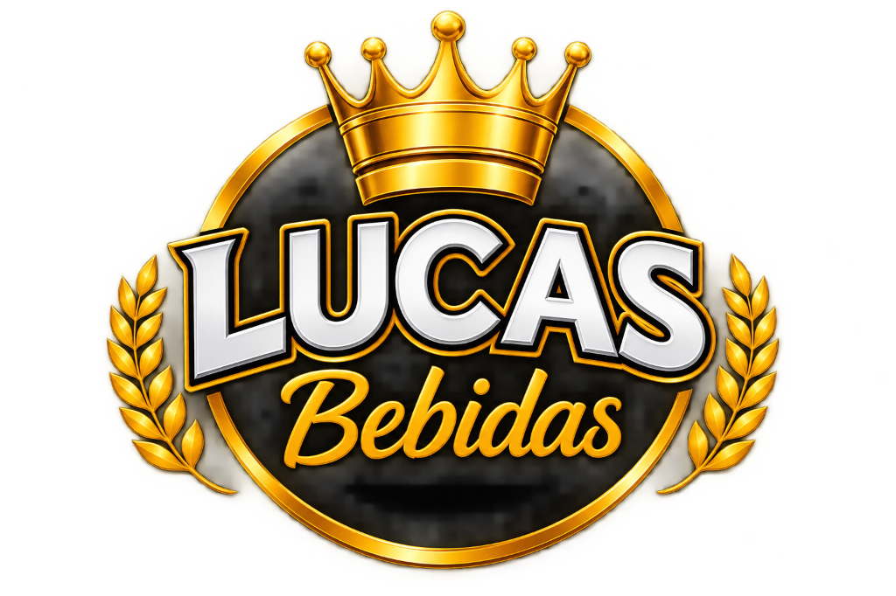

Proposta de evolução visual profissional para a Lucas Bebidas (Planaltina-DF). Preservação da autoridade comercial e dos símbolos originais com acabamento contemporâneo e vetorial.
A proposta foi construída com respeito absoluto à memória e ao reconhecimento do comércio em Planaltina.

Emblema clássico com coroa dourada, ramos de louro laterais e tipografia espessa com relevo 3D. Apresenta forte carisma local, porém com limitações de escalabilidade em telas pequenas (smartphones, favicons e impressões monocromáticas).
Vetorização pura em SVG, curvas purificadas, gradientes de ouro metálico de alto contraste, tipografia geométrica balanceada (Montserrat 900) e assinatura cursiva refinada. Fidelidade visual preservada em 100% dos tamanhos.
Formatos desenvolvidos especificamente para cada ponto de contato físico e digital do estabelecimento.
Uma combinação de nobreza imperial (Ouro Metálico) com o peso e a autoridade urbana do Preto Ônix e Grafite.
Construída para transmitir robustez comercial, dinamismo e leitura rápida em qualquer dispositivo.
Garantem a preservação da integridade da marca em qualquer material gráfico ou digital.